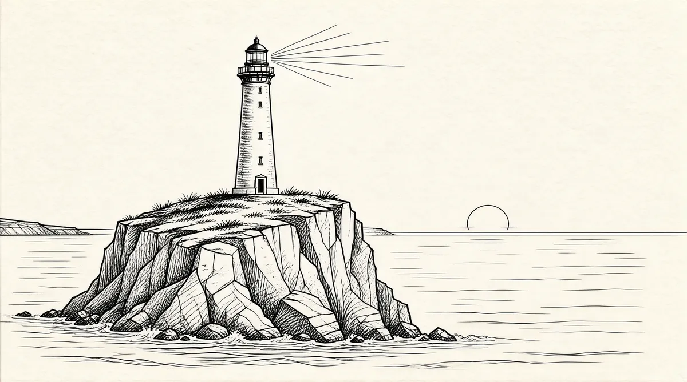

第61章 七度火苗

巴菲特在旧金山度过了26个周末。他和苏珊一起看了近100集的《欢乐一家亲》。全家人对苏珊呵护备至。她依然没有精力见前来探望的朋友。
苏珊开始吃一点儿新鲜食物。一位承办宴席的厨师朋友汤姆·纽曼想尽各种办法让她吃一点儿比较健康的食物，不再只吃冰激凌和巧克力麦芽，而是吃一些胡萝卜泥、菠菜奶油沙司、土豆泥、鸡蛋沙拉和“其他可以保证合理营养的食物”。1
3月份，她接受了手术后的第一次核磁共振检查。巴菲特清楚这次检查意味着什么。苏珊已经说她不用再做手术了。
“她不用再到医院去，不用再去。我认为这应该是好兆头，但是……”
核磁共振检查结果显示没有阴影。巴菲特异常高兴，他说苏珊的医生告诉他，检查结果说明她复发的概率和从来没有患过癌症的人一样。然而，是苏珊让医生这么对他讲的，因为她认为这才是他需要的结果，而施米特医生对苏珊讲的实际情况是可能在一年内不复发，之后就不太好说了。2
就像小时候的那次生病一样，这次一连数月的生病休养给苏珊带来的影响可想而知。尽管身体依然虚弱，但她却迫不及待地想要重新开始自己以往忙碌的生活。“我要去看孩子们，”她说，“我要去看所有的朋友，做我想做的所有事情，直到施米特医生对我说得收敛一下了。”3
她想做的第一件事情就是去拉古纳海滩的住所，叫孙子和外孙们都到那里和她一起生活一段时间。为了沃伦，她愿意参加伯克希尔的股东大会。她还希望可以有精力参加彼得在奥马哈举办的多媒体音乐大展《魂——七度火苗》的首次公演，时间在7月份。她列出了许多许多自己想做的事。
苏珊的头发近几年一直是淡色的，现在留着短发；脸庞还是很年轻的样子，只是略显消瘦。她说话的时候有点儿轻微的咬舌，但不会让人一下就联想到曾经发生的一切，也看不出她精力不济的样子。
巴菲特最关心的就是她能否参加5月举办的股东大会。股东大会对他来说就是显示自己受欢迎程度的时候，通过自愿飞到奥马哈参加这次盛会的人数多寡可以对此做出判断；她不是观众，而是不可或缺的角色。如果她不能参加，就好像他的女主角没有上台一样。
巴菲特夫妇合理地安排了股东大会的周末活动，阿斯特丽德（在她看来股东大会和前后的一切准备收尾工作都非常烦人，乐得推辞）只是陪沃伦参加一些幕后社交活动，就像平常一样，而苏珊以“妻子”的身份参加“正式”的公共社交活动。股东大会上她的座位在董事区，星期天下午在波仙珠宝店的大厅里，她和阿尔·奥霍乐一起登台演唱。随着时间的推移，忠实的戴西·梅尔带领的助演阵容越来越大，巴菲特同样非常希望他们可以参加股东大会。整个周末都可以不时听到卡罗尔·卢米斯叮叮当当来来去去的声音——她的手镯上配着27件纯金和珐琅饰物，她手里拿着伯克希尔–哈撒韦年度报告的复件上上下下地奔忙——每年都是她来校订巴菲特致股东的信。沙伦·奥斯伯格也在其中忙碌，负责登记愿意在星期日下午参加桥牌锦标赛的股东名单，地点在波珊珠宝店的大厅外面巨大的白色帐篷里。巴菲特还没有确定新近加入公司的黛茜·梅尔和德文·斯珀吉翁的具体工作。斯珀吉翁，之前是负责报道伯克希尔–哈撒韦的《华尔街日报》记者，秋天就要开始在法学院学习了。巴菲特把她当作一位新朋友，这是极其幸运的，巴菲特现在好几年才增加一位新朋友。他还建议她在股东大会期间举办婚礼，他愿意在婚礼上带着她走过长长的过道，把她交到新郎手上。“想想你可以得到多少波仙珠宝店的礼物啊。”他说。如此真诚的建议让斯珀吉翁非常感动，但是她细心地想到媒体会把她的婚礼描述为伯克希尔式的婚礼，于是还是和未婚夫凯文·赫利科尔决定在意大利举办婚礼。巴菲特安排她在预留区域和经理们坐在一起，奥斯伯格和卢米斯其实就是巴菲特家族的成员，他们坐在家人和董事预留区域。4
其他人要想不坐在角落处就必须积极争抢座位。今年，许多人都要求取得参会资格，估计将有近两万人参加。
eBay网站出现了黑市“黄牛”，4人参加的参会证件卖到250美元。巴菲特有些吃惊，有谁听说过倒卖股东大会入场券的？eBay这样描述：“可能亲眼见到沃伦·巴菲特，也可能在大会上向他提出一个问题……中标人还可以得到一份客人指南。持有通行证还可以享受内布拉斯加家具城和波仙珠宝店的员工优惠价……参加烧烤聚会……波仙珠宝店的鸡尾酒会……一睹在巴菲特最喜欢的牛排馆进行的股东聚会……看到伯克希尔旗下的许多公司的各类展品。”
尽管巴菲特觉得黑市“黄牛”的做法没有什么大不了，但是这位老霍华德·巴菲特的儿子还是希望这样的倒卖活动不再继续上演。他不能容忍人们为了参加股东大会而任“黄牛”诈骗。这位仅仅在一两年前还（摆出充分理由）声称自己对技术一无所知的先生，开设了自己的eBay网上零售店，开始叫卖5美元两人的参会证件。人们争先恐后地发来电子邮件。要么问这些证件是“真的”吗，要么问这些证件是不是外观不同，标记说明持有人不是“真正的股东”？这样的问题说明，如果有明显的标签指明他们不是“俱乐部”成员会让人难堪。
但是，答案是否定的，只要持有证件就是真的。这样一来，伯克希尔–哈撒韦——过去只是富有的合伙人、巴菲特眼里的朋友们组成的会员俱乐部——突然之间演变为一个粉丝俱乐部，欢迎所有人加入。
奥马哈城新落成的奎斯特中心就像一座巨大的银色马戏场，矗立在密苏里河畔。正面犹如一块巨大的镜子，辉映着陈旧的市政会堂，过去4年中股东大会就在那里进行。凯莉·马奇莫尔在股东大会的前几天就带着无线电话到处忙碌，指挥叉式升降机根据设计要求在各处停放，叉式升降机满载着大包大包的干草、一箱一箱的鲜花、路灯柱和重达几吨的植被，这些材料都是用来装饰花园和展厅座位区的。建筑工人忙着搭建一排排摊位，摊位将展示帐篷、空气压缩机、各类刀具、百科全书、真空吸尘器和相框。工人们在家具展厅、厨房用品店、牛仔靴展厅、书虫书店、蜡烛商店、保险销售柜台和女装专卖区之间蜿蜒的街道和小路上竖起“伯克村”的标牌。奎斯特中心楼上，舞台工作人员已经摆好了铺着白色桌布的桌子，安放好麦克风，背景是巨大的屏幕，巴菲特和芒格将坐在那儿，负责灯光的人员打出表示节目马上开始的交叉灯光进行信号板测试。后台特意配备了“明星”专用化妆间，是让苏珊在那里休息的。一辆装甲车载着价值25万美元、镶着珠宝的牛仔靴直奔贾斯汀展厅。电影放映机和银幕、还有大型靠垫都摆放在卡斯巴聚会大厅，大会期间几百名伯克希尔–哈撒韦的员工自愿在那里超负荷地工作，会后他们个个都精疲力竭。
巴菲特像个十几岁的小伙子一般精力旺盛，在办公室忙得团团转。包括大学生在内的来宾都纷纷前来见他。一周来他的声音越来越嘶哑，来宾也越来越多。人们都不停地劝他保护好自己的嗓子，后面还有发言呢，但是他还是无所顾忌地该怎么说就怎么说。得克萨斯州要求增加1000个参会名额、加州2000个、美国以外1.5万个。77人从澳大利亚包机飞来。
到星期五，巴菲特的声音就像得了重感冒没有恢复那样，但他依然不愿停止讲话。巴菲特从来就没有停止讲话，一生都没有。从他还是一个小男孩、早熟的个性让父母的朋友们都非常吃惊之时；从他给高中老师提出股票方面的建议之时；从在男生聚会中，大家都聚在一起听他发言之时；从他和本杰明·格雷厄姆在哥伦比亚大学的会议桌上双剑合璧之时；从他决定卖出GEICO之时；从他在夜校第一次拿起粉笔教授投资之时；从他在奥马哈的鸡尾酒会和纽约的餐会中成为焦点之时；从第一次接触合作伙伴到最后一次；从他参加西伯里·斯坦顿家在破阁楼举办的最初的伯克希尔股东大会、回答康拉德·塔夫提出的问题到最近回答登门拜访的学生们的问题——只要巴菲特能教给别人一点什么，他就从来不会停止讲话。
星期五晚上彩排的时候，他面对为数不多的几个人进行了一番演讲，随后参加了查理·芒格举办的私人晚餐聚会。5第二天黎明时分，餐饮工作人员送来了记者们和后台工作人员的早餐，还有供应商的蜜蜂咖啡。人们有的穿着运动服，有的穿着有领T恤，有的穿着短裤、戴着泡沫塑料帽子。大家早早地排起了长队，就像感恩节翌日清晨梅西百货公司门前排着的长队一般。早上7点奎斯特中心准时开门，大家纷纷跑去抢占最好的座位。8点半，座无虚席。灯光变暗后，会场立刻安静下来。没有人互相耳语，没有人慌忙赶到。观众专心地等待着。音乐响起，短片开始。
今年股东大会开场短片的录制在春天的时候让巴菲特费尽心机，那时候他周末又要到旧金山，又要通过电话长时间讨论可口可乐公司的问题。短片第一次采用了好莱坞的真实剧本、第一次动用专业演播室摄影技术，而且——令巴菲特激动不已的就是——第一次选择替身演员。一个与他极其相像的人！他在办公室里一次又一次地重复播放短片，想象着观众会有怎样的反应。
银幕上出现了新上任的加州州长的面孔。在一间健身房里，阿诺德·施瓦辛格穿着军官服装，坐在一张精致的桌子后面。短片模仿了《军官与绅士》中的一段诙谐剧情，阿诺德扮演小卢·戈塞特，对巴菲特的替身吹胡子瞪眼，惩罚他做折磨人的运动，原因是他在州长选举期间胡乱对《华尔街日报》讲到加州极其不公正的财产税法。巴菲特与《华尔街日报》有些积怨，因为报纸对他的话断章取义，他写信给编辑阐明自己的观点，并且把信的内容公布在伯克希尔–哈撒韦的网站，在读者中间引起强烈共鸣。此后，他就惹出了麻烦，现在只能努力通过行动改过。
“你就是不想干了！说！说你不想干了！”阿诺德咆哮着。
“不，先生！您不能让我那么说！不，先生！我没有什么地方可去！”巴菲特大声说。但是他接着开始在健身房来回踱步，就像坐在家里的椅子上读《华尔街日报》一般轻松。
场景切换到州长办公室，阿诺德头枕在桌子上，睡得正香。
助理：“州长先生。”
阿诺德：“我没有什么地方可去！……嗯？”
助理：“打盹儿的时间过了，先生。该工作了，我们还得想办法处理这个混乱的局面呢。”
阿诺德：“什么？哦，好。哇，我刚才做了一个很奇怪的梦……”
他拿起桌子上的杂志，表情开始扭曲。这本《健美先生》的封面图画是肌肉突起、一副《举重》中施瓦辛格先生模样的图片，上面叠加着巴菲特一脸得意的表情。阿诺德在椅子上直起身子，面部表情再度因恐惧而极度扭曲。6
这就是让巴菲特欣喜若狂的梦想。为了完成拍摄，他很是花了些时间与这位全球最佳健美运动员一起合作，再加上点儿特效制作，终于如愿。他推出了现代版的《发达肌肉》，“胖姬”斯托克顿一定会被深深打动。
观众开始喧闹。接着放映以沃伦和查理为主角的短片，但是几乎所有的表演都将沃伦塑造为超级英雄形象。大多数滑稽短剧和卡通短片都强调巴菲特和芒格的守财奴形象。
随后，大厅灯光暗了片刻。接着舞台灯光亮起，苏珊一身粉红色套衫和裙子亮相，看上去瘦了一些，精神抖擞地从董事坐区走向台上，在前面坐下。接下来，巴菲特和芒格像头发灰白的脱口秀节目主持人那样坐在铺着白色桌布的桌子后面。大厅四周的几个巨型屏幕中出现了他们的特写镜头，所有观众都可以清楚地看到。巴菲特盯着台下黑压压的人群，人群中间相机的闪光灯不停地闪烁着，现场阵势就像内布拉斯加滚石乐队的演出现场一般。
在开始提问之前，巴菲特首先进行开场白，按照惯例利用5分钟时间就董事选举、认可审计等问题作了简单概括。今年，几乎就在他发言的同时，一位股东就站在麦克风前提出他不支持投票，声音有些紧张；他是代表参会人员提出这一建议的。他要求巴菲特考虑从旗下的公司中选择几位首席执行官加入董事会，因为这些首席执行官要比苏珊和豪伊·巴菲特更胜任董事会的工作。
整个大厅掀起了涟漪。尽管这一建议以非常尊敬的语气提出，但还是像一声巨大的异响一般破坏了股东大会的顺利进行，干扰了这次股东大会的日程。许多人感到震惊。伯克希尔–哈撒韦现在是美国第十四大公司，员工数量超过172000人，年收入640亿美元，利润80亿美元。但是公司从根本上讲还是一个家族企业，最大的股东巴菲特可以按照自己的意愿从家族成员中挑选董事。他认为他的家族在伯克希尔–哈撒韦的角色相当于沃尔顿家族在沃尔玛的角色，是连接巴菲特基金会和公司的纽带。无疑，他选择董事完全是按照自己的意愿，尽管有几位董事确实是成功的企业家。
“谢谢，”巴菲特说，“查理，就此你有什么想法呢？”
直接把问题踢给芒格——没有提出任何敏锐或简练的评述——说明巴菲特因此完全陷入窘迫。然而，这同样让芒格无言以对，他的任何发言都可能表示他对巴菲特如何选择董事会成员有一定的影响。但他确实选择了回避，只是简单地说：“我认为我们可以继续下一个问题了。”
现场又提出一个建议。代表人类生命国际组织的汤姆·斯特罗哈就堕胎问题发表演讲，他后来写道，当时“显然”就是为了以“堕胎问题”的发言为幌子要求伯克希尔公布其进行政治性捐赠的清单。生命决策国际组织曾联合抵制伯克希尔–哈撒韦，成功迫使公司终止慈善捐赠项目。7
对此，巴菲特只是说伯克希尔–哈撒韦没有进行任何政治捐赠，回绝了这一问题。
到这时为止，此次股东大会的商业会议已经占去半个小时，远远超过平常的5分钟，第一次让人觉得颇似令人不快的可口可乐股东大会。此时，股东们手里攥着写好的问题，耐心地在大厅各处装着麦克风、带有编号的讲台前排队等候提问。巴菲特开始接受提问，点名“一号麦克风”首先提问。许多提问都是一些非常敏感、让他厌烦的问题。他借一个问题开始解释为什么选择家庭成员参加董事会。他说他的妻子和儿子在董事会的角色是“文化守护人，他们没有为自己谋取私利”。
这是一个非同寻常的时刻。他第一次在公众面前为自己选择的公司经营方式辩护。后来就再没有人问及相关问题了。伯克希尔–哈撒韦的股东们都乐于接受这一现状。在他们看来，巴菲特完全有资格按照自己喜欢的方式经营公司，而他们都是受命运眷顾的人们。投资环境怎么样呢？有人问。目前我们的资本利用不足，他说：这种情况让人痛苦，但不至于因此做出蠢事。
有人问到巴菲特在可口可乐董事会机构股东服务公司提出投票反对他的事情。这件事情依然没有终结。他说：“我想伯特兰·罗素曾经说过大多数人宁死也不愿思考。许多情况确实如此。”
芒格尖刻地补充道：“当激进分子提出类似这样愚蠢的建议：某个人留在可口可乐公司的董事会就会影响公司的利益之时，变革就是伤人的，不会有什么成绩。疯狂的激进分子不会对我们的事业有什么帮助。”8
和往年一样，有人开始问巴菲特他在几年前购买的大量白银后来是怎么处理的。他顿了一下，接着说不对此进行评论。此时芒格在后台弄出莫名其妙的噪音，那位股东悻悻地径自坐下了。其实，那些白银早就卖掉了。
巴菲特和芒格开始吃松脆花生薄片糖，人们纷纷走向地下室的展厅，那里有37家伯克希尔–哈撒韦的子公司在销售产品，喜诗糖果店的松脆花生薄片糖瞬间就售完了。巴菲特和芒格吃DairyQueen的Dilly棒棒糖，Dilly棒棒糖就销售一空。许多人买上成盒的糖果带到会场，坐在楼梯上边嚼边听巴菲特接下来的发言。
许多提问还是老调重弹，巴菲特认真回答了一些创新而有见解的问题，同时巧妙地引入了他愿意提及的话题。今年他借股东大会详细说明的主题是“我为什么不看好美元”。他说美国就像一个过度开支的家庭。美国人从其他国家购买大量的产品，而没有足够的收入来支付这些产品，原因就是我们没有像其他国家卖给我们产品那样卖给他们大量的产品。要弥补差额，就要借钱。而把钱借给我们的国家可能会越来越不愿意这样做。
他说，目前我们支付的国债利息就超过全部收入的2%，这说明要扭转目前的局势不是一件容易的事情。他认为极其可能的情况就是到一定程度后，外国投资者就会不接受我们的纸质债券，开始把目标指向更有优势的地产、企业及其他“地产”。我们就开始一点点卖出美国，如写字楼和公司。
“我们认为随着时间的推移，美元对其他主要币种的汇率可能会降低。”他说。因此，美国经济——过去20年中一直保持良好势头，实现了低利率和低通货膨胀——可能在一定程度上开始倒退。利率可能会提高，通货膨胀也会上升，情况不容乐观。同样，在进行预测的时候，他无法说出具体时间。然而，为了保证伯克希尔–哈撒韦避开美元风险，他已经买了120亿美元的外币。
巴菲特和芒格开始谈论债务风险，人们有的走下斜坡，有的去坐电梯，纷纷在卖鞋的专柜前排起长队等着刷信用卡。托尼·拉马皮靴和贾斯汀鞋业平均一分钟卖出一双靴子：从上班穿的普通靴子到新潮的蜥蜴型靴应有尽有。西边的波仙珠宝店卖出1000多块手表和187枚订婚戒指。家具广场的业务订单创下1700万美元的纪录。
会议中心有许多疯狂的场面：NASCAR赛车旁边的GEICO壁虎向过往的人们挥手。扮演成Acme泡沫砖形象的人物与戴着泡沫冰激凌圆顶帽的人物手拉手。骑术小丑踩着高跷穿梭于空气压缩机和船只起锚绞车之间。展厅南端较高处是标准尺寸的克雷顿活动房屋，正如巴菲特此前所想象的一般，整洁的前廊是刷成米黄色的过道，房间配有红黄色的百叶窗，房屋前后是真草装饰的草坪，砖块铺成的地面上装饰着灌木丛。如他所料，人们排着长龙进去参观，犹如在迪士尼公园排队坐云霄飞车的场景。9
但是，最体现伯克希尔风格的是鲜果布衣展厅。鲜果布衣展厅向来都不发送免费的钥匙链或扑克牌。人们排着长队等着购买5美元一条的男士短裤，接着与穿着苹果和葡萄衣服的模特合影。一天下来，几乎所有短裤都销售一空。
黑白两色搭配的喜诗糖果店位置极其优越，就在展厅中间，过道同样挤满了人——不到三个小时就售完所有的棒棒糖、咸味坚果和松脆花生薄片糖。许多顾客都懒得花钱去买，这些偷窃的家伙直接伸手拿走大量的糖果，还偷走鞋店的许多鞋子，就在巴菲特和芒格眼皮底下干这些勾当，他们两人此时正在大厅上层谈论诚实和道德准则。
此时他们还不知道有人就在自己眼皮底下偷窃，否则可能会考虑在明年的股东大会时，在书店旁边设一个伯克村监狱，他们不慌不忙，一边回答各种问题，一边大口嚼着甜食，6个小时都在一直不停地讲话。
任何人连续6个小时不拿稿子不停地讲话都会精疲力竭，但是大会结束后，巴菲特和芒格却来到楼上的一个大厅，坐在一张桌子后面，开始了签名活动，为的是让国外来的股东有机会近距离接触他们。这是巴菲特最近提出的点子，芒格一直耐心地坚持到底，但是他确实累了，有时会说他不明白沃伦怎么想出这么个点子。他同样愿意让别人崇拜，但是从来没有像他的伙伴那样费心去想这些问题。
股东大会进行了几小时后，苏珊就去休息了。她没有参加星期日的早午餐会，但是星期一还是与沃伦一起飞到纽约，一直在酒店客房床上待到下午1点，将药片融入客房提供的免费冰激凌里服用。苏茜一直照顾着她，不让她太累。她想让母亲一天只做一件事情——见一位客人、购物一次、在酒店大堂待15分钟。10
苏珊参加了桑迪和鲁思·戈特斯曼每年特意为他们举办的传统晚餐聚会。从20世纪90年代中期开始，桑迪家的晚餐聚会就成为巴菲特集团的许多人在年度纽约之行中会见老朋友的一次机会。苏茜对鲁思·戈特斯曼说，“我母亲还是在努力做许多自己不应该去做的事情，她总是说自己很好，在这方面总喜欢撒谎”，并请鲁思帮忙照顾她母亲。来到戈特斯曼家参加聚会的许多人去年一年都没有见到苏珊，有的可能在股东大会上见过她，但也只是匆匆一面。她和沃伦没有坐在一起，人们纷纷前来向他们问好，坐下来聊天。许多人后来回忆说那次聚会非常感人。苏珊也高兴地说自己幸好去参加聚会了，但是参加聚会确实让她精疲力竭。
沃伦还希望她可以参加查理·罗斯主持的公共电视脱口秀节目。在节目中，苏珊谈了丈夫许多感情脆弱和讨人喜欢的事情，而且说她对沃伦的爱是“无条件的爱”。她还提到了自己搬到旧金山的事情，正如她对沃伦讲的，说她离开只是“想有一个自己的空间，那样很好”。罗斯提及阿斯特丽德，“她为您照顾您的男人？”“是的，她照顾得非常好，而且沃伦感激她，我也非常感激……她帮了我大忙。”苏珊说。或许是节目现场环境使然，谈话清楚地表示苏珊将阿斯特丽德作为自己控制沃伦的工具——这一点苏珊可能不愿意如此直白地表示出来。节目之后，她对苏茜说：“我们去波道夫时尚精品店吧。”11在那儿，她只是坐在椅子上看着周围的东西，过了一会儿就说累了，和苏茜一起返回酒店。
几天后母亲节到来，她的精力又恢复了许多，就应邀参加翠贝卡电影节，和女儿的朋友博诺见面。在她恢复其间，博诺一直发传真鼓励她，那时候苏茜将传真内容读给她听。据苏茜说那些信“对她极其重要”。到5月份，每天晚上都听博诺的歌入睡的她热切地期待见见这位救世主歌手。两人短暂见了一面。“我都不知道怎么形容她当时兴奋的样子。”苏茜说。
苏珊在床上休息了两天后，博诺和妻子阿里、女儿以及和博诺共同创建援助非洲慈善组织DATA的博比·施赖弗（阿诺德·施瓦辛格的妻子玛丽亚·施赖弗的兄弟）来到广场酒店，在餐厅和苏珊一起吃午餐。博诺和苏珊聊了三个小时，还送给她一幅他临摹她的一张照片创作的肖像画，上面写着U2的歌曲《One》的歌词。苏珊高兴极了。博诺还邀请她和苏茜一道去他在法国的家，苏茜当时正准备去法国参加基金会的董事会议。
苏珊回到旧金山后，立即将那幅画作放在显眼位置，重新摆放了墙上的其他艺术品、面具和装饰物品的位置，而且决心去法国。由于距离遥远，再加上她身体虚弱，全家的非洲度假计划再度取消。但是她认为自己当时的身体状况去法国没有问题。她和苏茜首先在巴黎的里兹大饭店住了4天，期间她把“下午1点起床”药片融入冰激凌按时服用，克服了跨越6个时区引起的时差反应，每天出去做一些简单的事情。随后乘坐TGV子弹头列车前往尼斯，拜访博诺在艾日海滨区的灰泥建筑的橙红色房子。
据说甘地曾经在这座房子祈祷，通过房子可以俯瞰地中海。博诺安排苏珊住在一间天花板很高的卧室，屋内有火炉取暖，光线充足，窗户宽大，配着薄纱一般的白色窗帘，窗外就是大海。大部分时间她都在睡觉休息，有一天下午苏茜带她到楼顶的露台看海，听博诺演奏U2未发行的专辑《如何拆除原子弹》。博诺还唱了一首自己为父亲的葬礼创作的歌曲：《有时候，你不能独自承担一切》。那天晚上，他们晚餐后聊了4个小时，博诺站起来给她敬酒，说：“我遇到了知己！”
通过这次面对面的接触，苏珊对这位有着超凡魅力的摇滚明星崇拜有加，甚至在隔天的返程航班上都睡意全无，一路戴着iPod播放器，听着他的音乐。“我在那里感到舒服极了。”后来提到博诺家时，她这样描述。12
大约在苏珊母女从法国回来一周的时候，巴菲特一家又去了太阳谷，只有彼得和珍妮弗留在奥马哈，为彼得首次公演《魂——七度火苗》作准备。苏珊去年在痛苦中度过一年漫长的隔离生活，为了弥补失去的时光，她期待一刻不停地去每一个地方、见每一个人。在太阳谷的时候，她和大家一起度过了许多时间，见到了巴里·迪勒和黛安娜·冯·弗斯腾伯格，弗斯腾伯格患过口腔癌，过去几个月就是她的传真和建议给了苏珊极大的鼓舞。然而，她还是精力不济，错过了第一天早上的活动。那天午餐的时候，她自己慢慢走着去餐厅取一杯脱脂牛奶，结果一到那儿，一群人就围上来问候。苏茜让豪伊赶紧过去陪在母亲身边，说：“妈妈不能这样待在那儿，她一直都是在努力撑着，那是不行的。快去让她坐下。”
第二天，苏茜准备开着高尔夫球车带母亲在各处转转。然而，当她走进母亲的公寓时，却看到她抱着一个小抱枕，蜷缩在沙发上痛哭，说“我坚持不住了”。13尽管休息时间很长，但她还是体力不支。
全家返回奥马哈后，都积极准备参加彼得即将举办的首次公演，苏珊抽时间去了女儿新开的编织店。苏茜和一位朋友合伙在郊区购物中心开了编织创意店。巴菲特对女儿的创业精神激动不已。他对编织店兴趣浓厚，分析了经营前景，认为年度总收入可以达到百万美元。巴菲特父女的关系也因编织店的开张而加深了许多。他对编织经营的兴趣一点都不亚于其他事情：每周专心阅读GEICO报表和分析在线销售业绩；节日期间每天关注喜诗糖果各零售店的销售业绩；每天阅读Shaw牌地毯传真过来的销售报表；圣诞节前每天审查波仙珠宝的日常报表；默记美国住房服务公司（中美洲能源旗下的房地产公司）的房产统计数值；列数奈特捷公司的喷气燃料成本和所有权统计数据；了解《布法罗新闻报》的广告起源……编织经营同这一切一样深深地吸引着他。
然而，对巴菲特来说，彼得的多媒体公演就不及编织店魅力强大。彼得基于之前推出的PBS特辑，并花了4年时间专心研究现场演出的技巧和经验，推敲音乐和故事情境。然而所有的辛苦都有可能付诸东流——除非现场演出非常成功。
巴菲特参加过彼得以前举办的现场演出，就是彼得和一支乐队，在一个帐篷模样的特殊剧院里一起弹奏，表演阵容就是几名土著人歌手和舞者，一切都简简单单的。沃伦一直建议学生们要充满激情地生活，但是他所谓的激情，如争取成为双陆棋世界冠军，都是竞技性极强的活动。而热衷于艺术，不考虑取得什么世界大奖，完全不是他的生活。那是苏珊的生活，在自己的空间寂寞地追求精神、心灵和内在的王国，是画家埋头在画布上表现自己，多年来都得不到公众认可的一种生活。不管怎么说，他自己对于投资的热情、耐心和艺术想象力就是彼得对于音乐的热情、耐心和艺术想象力。这样，巴菲特找到了唯一的最佳表达方式——艺术和商业的联姻——来表达自己期待彼得成功的真实愿望。这次演出潜在的商业成功吸引着他。“我目睹了多次这样的演出，几乎每一次都是大举成功。现场总是热情激昂，但是我不知道市场到底能有多大。在市场深度方面，彼得的音乐不及百老汇的音乐，我们期待看到结果。”
彼得在为演出募集资金的时候，巴菲特家族成员的身份使得募集工作异常艰难，在人们看来他可以轻松得到大笔基金。直到彼得把自己的房子抵押出去人们才信以为真。沃伦只答应支付10%，而其余资金由彼得自己筹集。在他筹集到200万美元的时候，父亲给了他答应给他的30万中的20万。然后，彼得自己筹集剩余资金，一大笔是通过鲁道夫·斯塔纳基金会获得的。自始至终，他都是一边排除各类障碍筹集资金，一边登台演出。而就在彼得为了筹钱各处奔波的几个月中，父亲居然不再坚持自己的“不捐赠”原则，友情支持汤姆·墨菲的救助儿童会1000万美元。
看起来好像有点儿冷漠——即便是为了培养儿子的自立能力——支持儿子的事业所花的钱只有1000万美元的2%，也是太不近人情了。然而，事后回忆起来，彼得还是非常庆幸自己的演出没有成为依靠父亲资助的浮华演出——那样将无人问津。他认为父亲当时的做法就是处理复杂问题的明智之举。既让彼得得到了家庭的支持（彼得对此非常感激），又让他自己努力筹集大部分资金以证明自己的能力，所需资金共300万——尽管筹集资金本身就可能用去几十万美元。
沃伦不能完全理解儿子对土著人的迷恋，他（和家里的大部分人）认为那就是“印第安人表演”。他从来没有想过那次演出就是一种对迷失身份的象征性的追寻求索，是人类找回一些迷失或遗忘的东西的精神胜利。
《魂——七度火苗》是一个光彩夺目的故事，讲述一位土著人穿梭时空，探索自己祖先和种族根源的故事。封闭的舞台仿佛一个巨型帐篷，宽广而又隐秘、现代而又古朴。土著人穿着原始的粘满羽毛的衣服在史诗电影背景下边唱边跳，彼得的音乐让观众觉得异乎寻常而又似曾相识，流畅而又奔放。
整个春天彼得都着魔于自己的演出工作，这曾让苏珊对他非常生气。尽管彼得和父亲性格截然不同，但是苏珊认为他完全陷入了自己的音乐中，就像沃伦完全着迷于投资那样，对他和珍妮弗的婚姻是一种威胁。然而，她完全理解彼得的演出要表达的意义和情感，而且音乐令她有了共鸣。她欣赏彼得的艺术成就。沃伦也喜欢音乐，为儿子感到骄傲，但是坐在现场的他，领略着变化多端的视觉效果，心里却感到极为不安，不知道演出结果如何。他环顾四周，看到其他观众有的拍手、有的欢呼，说明演出还是很不错的。当《奥马哈世界先驱报》用这样的语言——“深刻、忧伤、振奋、激动和强大”——描述儿子的演出时，他非常高兴。一年多来他内心一直紧张地期待着这一刻的出现，彼得取得如此巨大的成功显然让他松了一口气。但是他依然担心，不是没有道理的担心，这次的成功只是因为在家乡举办的缘故，他期待着在其他地方的演出能取得同样的成功。
《魂——七度火苗》还在奥马哈继续上演的时候，苏珊就和孙子、外孙们一起去了拉古纳的房子。孩子们都习惯了苏珊宠着他们，想要什么都可以得到，带着他们到处玩，堪称“模范”奶奶（姥姥）。现在她更是不让孩子们有一点儿失望。她带着他们去商场买东西，和以前一样，坐在那里指着周围的东西说，“我要一个那个、两个这个、一个那个。”14尽管拉古纳之行让她精疲力竭，但她还是准备前去参加每年太阳谷聚会之后赫伯特·艾伦召集的聚会。
太阳谷年会之后不久就去怀俄明州科迪高原，和许多人一起过周末，这似乎还是有些问题。家里人也不是完全支持这次旅行，但是苏珊一心想去，而且沃伦也希望一切都回到从前的样子。因此，7月的最后一周，沃伦和苏珊一起去赫伯特·艾伦的J9农场，准备过一个长长的周末。
苏珊当时看上去精力充沛，见到大家非常高兴。15晚餐时大家聚在一个大房间，房间有一个超大的火炉，驱走了高原的寒气，苏珊当时讲话很多，还建议客人们就即将到来的选举进行一次民意投票。16后来，晚餐桌子都收拾完毕，人们准备吃点心、喝咖啡的时候，她站起来向大家讲述生病期间女儿悉心照料她，她们的母女关系更加亲近了。17突然，她眨了眨眼睛说想起了一些有趣的事情。18刹那间，赫伯特·艾伦以为她在做一个滑稽的舞蹈动作，转而意识到她要摔倒了。她的腿开始弯曲的时候，他和芭芭拉·奥霍乐很快过去搀扶她，没有让她倒在地上。19
他们扶着她坐到旁边的沙发椅上，椅子是身为瑜伽教练的赫伯特·艾伦特意搬到那里供苏珊休息用的。他们叫沃伦到房间去拿药。苏珊的健康状况一直都是时好时坏，度过了许多危急关头，没有人认为这次会有多么严重。然而，他们还是打电话叫了护理人员。沃伦也打电话告诉苏茜，苏茜当时在波士顿与博比·施赖弗和比尔·克林顿一起参加民主党大会，正在听约翰·爱德华兹演讲。沃伦告诉女儿苏珊有些头疼，而且要了艾斯利医生的电话。苏茜把医生的电话号码告诉父亲后就挂断电话。她马上知道是出了什么问题，接着又想可能是妈妈伤了脚趾，父亲才打电话要艾斯利医生的电话。20
苏珊躺在沙发上，连胳膊都抬不起。她吐了几次，说有些冷，头疼得厉害。人们就拿来毛毯给她盖上。她一阵一阵地失去意识，有时候努力想说什么。沃伦忙着找苏珊的用药处方，以便护理人员即时参考。他看到苏珊当时的情况后越来越悲伤；显然她可能是得了中风。其他客人都无助地等着救护车的到来。时间在漫长的等待中消磨。过了一会儿，苏珊说头疼好些了，也可以按照人们的要求动动胳膊和脚了，大家都松了一口气。护理人员到来后做了一些简单检查就把她移到担架上，推着走向救护车，沃伦跟在后面。护理人员把苏珊抬上救护车后，他们也进去把车门关上。沃伦坐在前排座位，救护车开始在前往科迪西帕克医院的蜿蜒山路上盘旋，到医院有34英里的距离。21
他们进了救护车，沃伦就给苏茜打电话。“你得过来，”他说，“妈妈又生病了，我觉得可能是中风。”几分钟后他再次打电话说，“你得把两个弟弟也带上，一起到这儿来。”
苏茜打电话告诉了当时在奥马哈的彼得，他正在酒店客房准备演出。她又打电话给德文，她当时正在印第安纳的沃尔玛超市。“豪伊在哪里？”她问。“在非洲，”德文说，“他的飞机大概一小时后落地。”苏茜赶紧安排奈特捷航班首先到波士顿接她，而后再到奥马哈接彼得一起去科迪。22豪伊刚在非洲落地，就被告知马上打电话给姐姐。他首先想到的是父亲可能有什么事，后来又想可能是彼得出什么事了。“我完全没有想到是母亲。”他说。在得知第二天才有返程航班后，他心急如焚。23
苏茜安排这一切的同时，赫伯特·艾伦和一位朋友，雕刻家凯尔西一起开着他的车跟在救护车后面前往医院。救护车开得极慢，他们非常郁闷，一想到沃伦无助地坐在车里，忍受这样的漫漫行程，他们就格外不安。在一段路上，他们开到救护车一侧，艾伦大声问司机究竟是怎么搞的，但是没有人理会他的问题。
最后总算抵达医院，CAT扫描显示苏珊出现了大面积脑溢血。沃伦在急诊室外来回踱步。医生终于走了出来，对他说苏珊可能挨不过今晚。沃伦精神恍惚，哭着走到医院大楼外，把情况告诉凯尔西和艾伦。24之后，他回到病房，坐在床头陪苏珊。他静静地等待着那一刻的到来，显得非常无助。
大约在凌晨4点30分，苏茜和彼得乘坐的航班降落。他们坐车抵达医院停车场后匆匆走进一楼大厅，首先看到了赫伯特·艾伦。当时夜幕下群山的背景颇似太阳谷，苏茜忽然想到：“哦，天哪，现在的情景和格雷厄姆太太去世的时候太像了。”
来到楼上，他们看到父亲坐在母亲身边，握着她的手。旁边桌上的樱桃可乐根本没有动过。“我在这儿5个小时了。”他说。苏珊非常安静，他们几乎看不出她的呼吸，她戴着小型的氧气面罩。沃伦去了旁边的房间躺下，彼得就在母亲病房的地板上躺下，他们很快就睡着了。苏茜坐在母亲床边的椅子上，轻轻地抚摸着母亲。
过了一小会儿，她发现苏珊没有呼吸了，随即叫来护士，而后打起精神，叫醒父亲，告诉他这个不幸的消息。25
接下来的几个小时，巴菲特一直在哭，孩子们忙着安排一些必须做的事情。他们和赫伯特·艾伦匆匆准备好新闻发布的内容，在确认去世和器官捐赠的文件上签字，安排返回奥马哈后的事项，打电话告诉阿斯特丽德、凯瑟琳·科尔和其他几位沃伦和苏珊要好的朋友，这样他们不至于通过CNN的新闻才得知苏珊去世的消息。中午时分，他们坐上了湾流IV型飞机开始了此生最艰难的一次旅程。
在飞机上坐了一会儿后，沃伦深深地叹了口气，问：“前面有卫生间吗？”“没有，在机舱后部。”苏茜对他说。他一步步挪到飞机尾部，目光避开了飞机沙发上装着苏珊遗体的拉链袋。26
飞机在奥马哈着陆后，他们全家同样得到了特别关照，飞机没有在停机坪停靠，而是直接滑翔到飞机棚，灵车就等候在那里，这样避开了狗仔队跟踪拍摄他们一家悲伤的场面。沃伦径直回到家中，走进楼上的卧室，关门闭灯，一头钻进被窝。
阿斯特丽德知道该做什么，就是什么都不必做。她知道安眠药就在他手头，就没有去打扰他。她过一会儿就去苏茜家一次，在苏茜面前伤心地痛哭一阵，其他时间就待在家里照顾沃伦。
第二天是星期五，他依然躲在被窝里。罗恩·奥尔森和妻子简从洛杉矶赶来，罗恩要作一些法律方面的安排，需要处理苏珊的遗嘱，而且他是巴菲特一家非常要好的朋友，对孩子们有着深刻的影响。沃伦来到楼下，奥尔森陪他坐了一会儿。不到一个小时，电话响了，是唐·格雷厄姆打来的。“你在哪里？”苏茜问道，“就在市区的希尔顿酒店。”他说。他知道消息后就赶来了，尽管巴菲特家的人还没有来得及通知他。后来，苏茜找了几个朋友来他们家，在接下来的几天中，大家都坐在客厅帮助沃伦分散悲伤的情绪，不让他感到孤独。每天晚上9点半，他服安眠药上床睡觉。
过了一两天，沃伦开始给几个朋友打电话。电话接起后，没有声音；他说不出话来，也就不说什么，只是拿着话筒痛苦地喘息着。接着，泪流满面，哽咽着说声“抱歉”，就把电话挂上。对方不知道打电话的是谁，其实只要沃伦可以清楚地说出“SOS”就足以让对方明白。
苏茜已经通知了所有需要通知的人。第二周，比尔·鲁安和卡罗尔·卢米斯短暂停留了几小时。沙伦·奥斯伯格、比尔·盖茨和凯瑟琳·科尔都赶来了。豪伊也经历了“最漫长的回家之路”，终于从非洲赶回来。这是他再也不愿回忆的痛苦旅程。27
那一周，比尔和沙伦特意安排了桥牌比赛——和沃伦一起比赛。有一天晚上，他和大家一起在举办桥牌比赛的酒店吃晚餐，饭后看他们玩了一会儿，这样可以分散一下他的注意力。还有一天晚上，他们都聚在沃伦家，沃伦想让他们陪他一起看查理·罗斯采访苏珊的录像。阿斯特丽德不忍陪他一起看，而他又害怕自己一个人看。他们把节目录像放入DVD开始播放。过了一会儿，沃伦就开始哭。比尔离开了房间，沙伦蹲在他身边轻轻地安慰他。28
只要一提到苏珊的名字，沃伦就满眼泪花。随着葬礼的临近，一直忙着安排葬礼的苏茜发现父亲还是顾虑重重。她渐渐明白是为什么。“您不必参加葬礼的。”她对他说。沃伦痛苦不堪。“我去不了。”他说。坐在那里心里一直想着苏珊，却要面对所有在场的人是他无法做到的。“我去不了。”29
不同于沃伦，许多人都希望自己可以亲自参加追悼会，表达对苏珊·巴菲特的悼念。然而追悼会没有举办。只有家人、苏珊最要好的几位朋友、博诺和妻子阿里、博比·施赖弗参加了葬礼。苏珊的音乐家朋友戴夫·斯特赖克弹吉他，格莱德纪念教堂的牧师塞西尔·威廉姆斯主持葬礼。博诺唱了《有时候，你不能独自承担一切》。孙子和外孙们都痛哭流涕。
几周过后，似乎一切都恢复了正常。沃伦的世界空了。许多人——包括苏珊本人在生前——都觉得没有她，沃伦的生活就艰难无比。他一直就没有真正面对父亲的去世，依然无法面对地下室里堆放的霍华德先生生前未完成的手稿。就像沙伦说的，他过去总是站在第三者的角度看待父亲的去世。但是这一次他让自己亲历了苏珊的离去，一下子陷入了极度痛苦之中，尽管现实让他觉得害怕。
苏珊的去世让他刻骨铭心地意识到自己同样必须面对死亡的命运。74岁生日一天天近了。他希望自己打起精神，就和几个朋友说希望他们在他生日的时候到奥马哈庆祝。几天后，苏茜打电话告诉父亲的朋友们，还是别来。30沃伦完全没有准备好。其实，分散痛苦对他来说不是最好的办法。痛苦不可能缩短，必须一点点经历。
他无法摆脱悲伤，即便在梦中也是如此。每晚都做相同的噩梦。和苏珊永远分开，他们两地生活的这些年他从来没有想到过会有这样的别离，却突然成为眼前的现实。他总是梦到在科迪去往医院的漫漫路途中，困在救护车里，一点都帮不上她，不能让车停下来。7月星星点缀的寒冷夜空衬托出沉寂的大山的轮廓。救护车沉默地在蜿蜒的山路上盘旋。路在他们眼前无尽地延伸，一英里接着一英里，一排排树木仿佛从山脚向上的朝圣者。车厢后部，苏珊躺在担架上，面色苍白，极其安静。救护车的声音渐渐远去，一排排杜松就像山坡上生长的淡淡的苔藓，前方的路越来越窄，无尽地延伸。流星划过头顶漆黑的夜空。时间一点点凝固。
他曾经要求她不要离开他，而且她答应不离开他。不管她关心照顾过的人有多少，不管她内心有过怎样的挣扎，在她的人生中，不管她选择了多少不同的生活方向，她总会回到他身边。她不会让他失望。现在却得不到她的回应。他那么需要她，怎么可能是她离开了他。他要时间停止，他不让她走，她必须陪着他。
救护车在漆黑的大山里缓缓而行。氧气罐在寂静中发出点点声音，伴着他的眼泪。车厢后部只有安静，听不到她的呼吸，甚至看不出她的痛苦。
沃伦心急如焚，内心随着车轮的滚滚向前而翻江倒海。你不能离开我，你不能离开我，求求你不要离开我。
但是苏珊已经永远离开了他，她去了另一个世界。她离开他去了另一个世界，让他痛苦得撕心裂肺。
[1]彼得是电影《魂——七度火苗》的原创音乐作者。——译者注